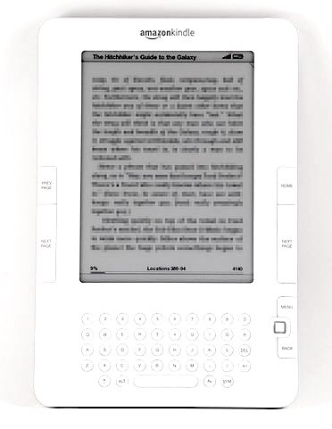

Over the past 23 years, Amazon.com has upended dozens of industries, created countless millionares, and sent city leaders scrambling to offer the most generous tax breaks in pursuit of Amazon jobs.
The one-time bookseller owns a fleet of jets, maintains military contracts, and recently spent a billion dollars on televsion rights to the Lord of the Rings. Their cloud computing arm powers a considerable fraction of the interet and would be among one of America's largets companies on it's own right.


There may be something of value in these letters. High-level Amazon meetings start heads-down as managers silently read multi-page memos. Termed the
"silent start", Bezos' method gives serious weight to the written word.
"There is no way to write a six-page, narratively structured memo and not have clear thinking,” Bezos told Forbes in 2012.
To that end, what do twenty years of shareholders letters reveal about the evolution of the company what what drives its leader? This essay utilizes text analysis techniques to take a structured look at the information.
Bezos is largely positive across the ___words he shares each spring. He was consideribly terser in the years following the dotcom crash as the company's value in capital markets hemoragged (although its revenue continued to grow). He attaches a copy of the 1997 letter to shareholders each year.
As the world's richest man at the helm of one of the most disruptive companies in modern history, Bezos isn't going anywhere anytime soon. We're bound to hear more of what the internet calls
"Jeffisms". Like a more aggressive and toned Warren Buffet, Bezos' pithy managment advice echos around the pages of business magazines and across tech blogs at a rapid clip. one of his favorite turns of phrase includes variations of "relentless."
1997 "We will continue to focus relentlessly on our customers."
1998 " We’re proud of the differentiation we’ve built through constant innovation and relentless focus on customer experience, and we believe our initiatives in 1998 reflect it: our music, video, U.K. and German stores, like our U.S. bookstore, are best of breed."
1999 "During 1999, our relentless focus on customers worked"
2000 Industry growth and new customer adoption will be driven over the coming years by relentless improvements in the customer experience of online shopping.
2001 Most important, we stayed relentlessly focused on the customer, as reflected in a chart-topping score of 84 for the second year in a row on the widely followed American Customer Satisfaction Index conducted by the University of Michigan.
In July, as I already discussed, we added a third customer experience
pillar: relentlessly lowering prices.
Relentless commitment to long-term shareholder value
2003
In the long term,
however, relentlessly driving the “price-cost structure loop” will leave us with a stronger, more valuable
business.
2005 Our judgment is that relentlessly returning efficiency improvements and scale economies to customers in the form of lower prices
• We will continue to focus relentlessly on our customers.
2008
We’re relentlessly focused on adding selection, both by increasing selection inside existing categories and by
adding new categories.
2009
This work has been done by a large number of smart, relentless, customer-devoted
people across all areas of the company.